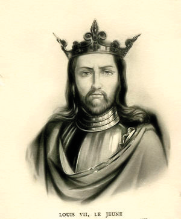
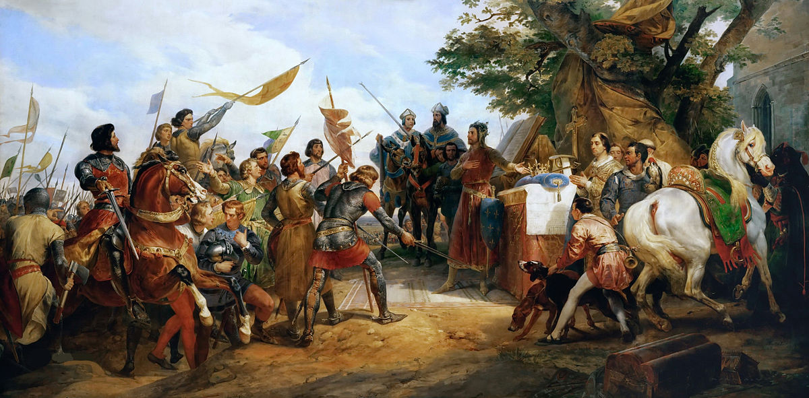

Après avoir consolidé son autorité au sein du territoire, la faible dynastie capétienne devait faire face à son plus puissant vassal : le roi d’Angleterre. C’est une première guerre de Cent Ans qui s’annonce. Mais à l’issu de ce premier bras de fer entre la France et l’Angleterre, le génie et la fougue de Philippe Auguste fera de la dynastie capétienne, une puissance forte et incontournable en Europe
Ce fils de Louis VI qui, en 1137, accède au pouvoir à l’âge de 16 ans, était un homme si religieux que sa femme, Aliénor d’Aquitaine, le surnomma « le moine ». Il démontra sa foi en participant activement à la deuxième croisade et en s’affirmant tout au long de sa vie comme le protecteur de l’Église. Mais il n’oublia pas pour autant les intérêts de la dynastie capétienne. En prenant systématiquement le parti de l’Église contre les seigneurs abusifs, il réussit à affermir son autorité dans tout le royaume et même à agrandir le domaine en direction de la Bourgogne et de l’Auvergne. Comme ses prédécesseurs, Louis VII a contribué à l’affaiblissement du pouvoir féodal. La France s’enrichit sous son règne, l’agriculture se transforme et gagne en productivité, la population augmente, le commerce et l’industrie se développent, une véritable renaissance intellectuelle apparaît, et le territoire se couve de châteaux forts construits en pierre. Enfin, malgré son peu de goût pour la guerre et malgré la puissance de son adversaire, il parvint à tenir tête au roi d’Angleterre, Henri II.
Louis VII le Jeune
Dans l’entourage de Louis VI comme de Louis VII se trouvait un moine qui joua un rôle de premier plan et qui assura une sorte de trait d’union entre les deux règnes. Issu d’une famille pauvre, il fut confié très jeune aux moines de l’abbaye Saint-Denis, au nord de Paris, où il fut élevé en compagnie du futur roi Louis VI. Lorsque celui-ci monte sur le trône, Suger devint un familier du palais royal. Le roi chargea son ami de missions très importantes auprès du pape à Rome et le fit élire, en 1122, abbé de Saint-Denis, qui était alors l’une des lus grandes abbayes du royaume. Suger dirigea l’éducation du dauphin Louis. Quand celui-ci, devenu le roi Louis VII, partit pour la croisade, entre 1147 et 1149, il fut nommé régent du royaume. Jusqu’à sa mort, il œuvra au renforcement du pouvoir royal et à l’amélioration de la justice. Il conseilla aux deux souverains qu’il servit de s’appuyer sur les habitants, ou bourgeois des villes, contre les féodaux pillards et indisciplinés. Aux villes qui le demandaient furent ainsi accordées des chartes, où étaient consignés les droits concédés par le roi : la faculté de rendre la justice, de s’armer, de lever des impôts… C’est le début des communes. Vers la fin de sa vie, il écrivit la vie des deux rois et surtout se consacra à la reconstruction de l’église de Saint-Denis.
En 1144, l’abbé Suger inaugure le nouveau chœur de l’église abbatiale de Saint-Denis. Il voulait en effet rendre son abbaye digne des reliques qu’elle abritait, digne aussi de conserver les tombeaux des rois de France qui, depuis Dagobert, s’y faisait inhumer. Aussi fit-il appel à un architecte qui était partisan de techniques tout à fait nouvelles. La nouveauté des églises gothiques réside en la découverte de la croisée d’ogive (deux arcs se croisant à la clef de voûte). Ce procédé plus résistant permit d’élever la structure en hauteur et d’alléger le toit, afin de libérer aux fenêtres des surfaces considérables. Plus tard, lorsque la reconstruction de Saint-Denis fut achevée, Suger, légitimement fier de son œuvre, fit graver au bas d’un vitrail : « Moi-même, Suger, en ai dirigé les travaux ».
Vue de la basilique Saint-Denis avant la destruction de la tour nord
En 1144, les musulmans reprirent le comté d’Edesse (l’un des quatre états d’Orient fondé par les croisés). Le pape ordonna alors de former une nouvelle croisade. Elle fut prêchée par Bernard de Clairvaux, à l’assemblée de Vézelay (Bourgogne), en 1146. L’expédition fut conduite par le roi de France Louis VII et l’empereur germanique Conrad III. Les désaccords entre les chefs, le manque d’organisation et les erreurs militaires entraînèrent une série de revers des forces croisées. Après que ses troupes eurent été décimées à Dorylée, Conrad rentra en Allemagne. Louis VII, quant à lui était peu expérimenté pour mener la guerre, et il se heurtait bien souvent à la perfidie des byzantins. Les survivants rejoignirent Jérusalem, puis déclenchèrent une attaque contre Damas, sans pouvoir s’emparer de cette ville. La nouvelle de l’arrivée de renforts musulmans contraignit les chrétiens à lever le camp et à rentrer sans gloire en Europe. En deux années seulement, le prestige des armées croisées était tombé si bas que l’on pouvait penser que plus personne ne voudrait reprendre les armes.
Louis VII tient son surnom de “Jeune”, car il était le fils cadet de Louis VI le Gros. Elevé par Suger à l’abbaye de Saint-Denis, il a gardé l’empreinte monastique et le peu de goût pour les armes.
Louis VII prend la croix à Vézelay, en présence de l’évêque de Versailles et de saint Bernard
Une des dernières mesures décidées par Louis VI le Gros, quinze jours avant sa mort, en 1137, fut de marier son fils avec l’héritière du riche duché d’Aquitaine, la belle Aliénor. En devenant la femme de Louis VII, elle permettait au roi de France de pénétrer dans une région où l’autorité royale était restée jusque-là purement théorique. A peine la dépouille de son père avait-elle été conduite à Saint-Denis que Louis VII se rendait à Poitiers pour se faire couronner duc d’Aquitaine. Ce mariage était un véritable coup de maître de la diplomatie de Suger. La dot de la jeune mariée permit de tripler le domaine royal, il y avait alors une partie du Midi et de l’Ouest de la France, soit 19 des départements actuels. La nouvelle reine apportait en héritage non seulement le duché de son père, mais aussi un peu de cette civilisation de la Guyenne, plus raffinée et plus brillante que celle du nord de la France. Ainsi, Aliénor aimait la musique, les fêtes et les chansons des troubadours, ces chanteurs-poètes qui allaient de château en château en célébrant la beauté des gentes dames. A l’inverse, Louis VII était timide, réservé et très pieux, ce qui s’accordait mal avec le caractère fort et sensuel d’Aliénor. Cette différence de caractère, de culture, s’ajoutant au fait qu’Aliénor ne parvenait pas à donner au roi l’héritier qu’il espérait. Cependant les dix premières années semblent se passer sans réelle mésentente.
”La grand-mère de l’Europe” comme on l’appelle aussi est également une femme distinguée et cultivée. Elle est à l’origine du premier code maritime de l’humanité. Ce code est connu sous le titre de “rôle et lois d’Oléron” et il régit les règles de navigation. Elle fit huit enfants à Henri II Plantagenêt, puis elle se retira à Poitiers à cause des infidélités de son mari. Tout en étant exceptionnelle, la vie d’Aliénor témoigne du comportement très libre des femmes au Moyen Âge, du moins dans les classes supérieures. Elle entretenait et répandait la culture occitane des troubadours et de l’amour courtois. Aliénor est aussi la grand-mère de Blanche de Castille, la mère de Saint-Louis.
Aliénor d'Aquitaine, Duchesse d'Aquitaine et deux fois Reine - Frederick Sandys @ Photo National Museum of Wales
Le conflit avec la France et l’Angleterre avait commencé après l’invasion du pays par le duc de Normandie, Guillaume le Conquérant. Le riche duc, qui était le vassal du roi de France était alors roi d’Angleterre et l’un des hommes les plus puissants d’Europe. Sous son influence, le pays prospéra et se modernisa. En 1128, le comte d’Anjou, Geoffroy Plantagenêt (dû à son habitude de porter une branche de genêt à son casque) épouse Mathilde d’Angleterre, la descendante des rois normands qui possédait le duché de Normandie. Ainsi, leur fils Henri possédait le double héritage de ses parents. Pendant ce temps, le roi de France Louis VII est appelé à participer à la deuxième croisade, son épouse Aliénor d’Aquitaine l’accompagne alors. Les deux années qui suivirent détériora les relations du couple. Aliénor tenta en vain de convaincre son mari d’aider son oncle Raymond de Poitiers, qui siégeait à Antioche. Très proche de son oncle, la jeune reine est soupçonnée d’inceste par de nombreux chroniqueurs de l’époque dont Guillaume de Tyr. A son retour, Louis présenta un rapport de consanguinité au 5ème degré avec Aliénor, qui lui permit d’annuler le mariage en 1152. Deux mois plus tard, Aliénor épouse Henri II Plantagenêt qui devient roi d’Angleterre en 1154. Henri possède alors le trône d’Angleterre mais également la moitié de la France avec les possessions en Anjou et en Normandie de ses parents, mais aussi celles d’Aquitaine apportées par Aliénor. Cette grave faute politique est le début d’une rivalité continuelle entre la France et l’Angleterre. Pourtant le rapport de force entre le puissant roi d’Angleterre et le roi capétien paraît démesuré. Mais Louis VII peut s’appuyer sur l’Église, et sur le despotisme d’Henri II qui pousse ses vassaux et ses fils à se révolter contre lui.
Après la répudiation d’Aliénor, Louis VII épousa successivement Constance de Castille et Adèle de Champagne. Cette dernière lui donne un unique héritier mâle : Philippe. En 1179, il le fait sacrer roi à Reims, et épuisé par la maladie, lui abandonne le pouvoir. Louis meurt en 1180 juste après avoir signé le traité de Gisors avec Henri II d’Angleterre. Philippe II n’est alors âgé que de 15 ans. Il était alors marié avec Isabelle de Hainaut, une descendante de Charlemagne. La dynastie carolingienne, si elle a cessé de régner est encore présente dans le cœur des Français qui l’appelle “la race des grands rois”. Les cinq premières années de son règne, Philippe réussit à triompher de ses encombrants protecteurs, les comtes de Flandre et de Champagne, et à agrandir le domaine royal. Mais la grande affaire du règne fut bien sûr la lutte avec les Plantagenets. Louis VII, conscient de ses faiblesses militaires et de la puissance de son adversaire avait préféré la ruse au combat ouvert. Il avait soutenu la Bretagne et le Poitou contre le roi anglais, et surtout, il avait aidé les fils d’Henri qui réclamaient une part d’héritage du vivant même de leur père. Ainsi Louis VII réussit-il peu à peu à user la force de son rival. Son fils, Philippe, choisira une voie différente, en cherchant l’affrontement sur le champ de bataille. Mais lorsque le grand Richard Cœur de Lion succéda à son père en 1189, Philippe se trouva face à un redoutable adversaire. Il accepta cependant de prendre avec lui la tête d’une croisade en Palestine.
Philippe Auguste est le premier roi à se donner officiellement le titre de roi de France.
Couronnement de Philippe Auguste Grandes Chroniques de France, enluminées par Jean Fouquet, Tours, vers 1455-1460
Quarante années passèrent, pendant lesquelles chrétiens et musulmans vécurent souvent en bon voisinage. Beaucoup d’anciens croisés avaient épousé des femmes arabes et avaient adopté nombre de coutumes orientales. Les échanges commerciaux étaient très intenses entre les ports du Levant et ceux des côtes italiennes. Le plus important des personnages du monde musulman était alors le sultan d’Egypte, Salâh al-Dîn, dit Saladin, qui avait étendu sa domination sur une grande partie du Levant et établi de bons rapports avec les chrétiens. Mais la violation de ce statu quo par quelques seigneurs fanatiques ramena la guerre dans la région. Saladin battit les chrétiens à la bataille d’Attîn et entra en vainqueur à Jérusalem en 1187. La prise de la ville entraîna l’appel à la troisième croisade. Elle fut appelée la « croisade des rois » parce qu’à sa tête se trouvaient les souverains les plus prestigieux d’Occident : l’empereur Frédéric Barberousse, le roi de France Philippe Auguste et le roi d’Angleterre Richard Cœur de Lion. Les armées réunies étaient très importantes. Mais à peine arrivé en Asie Mineure, Frédéric Barberousse se noya pour avoir traversé une rivière avec son armure. Les deux souverains survivants reprirent la ville de Saint-Jean d’Acre. Puis les événements prirent une autre tournure. Le roi de France n’avait qu’une seule hâte : retourner dans sa patrie et profiter de l’absence de Richard pour mettre la main sur les possessions françaises de ce dernier. Resté seul, le roi anglais accomplit des prodiges, mais il n’est plus en mesure de battre Saladin. Aussi conclut-il, en 1192, une trêve avec son valeureux adversaire. L’accord stipulait que Jérusalem restait aux mains des musulmans, qui s’engageaient en retour à protéger les pèlerins chrétiens se rendant dans la ville Sainte. De plus, les Francs conservaient les ports du Levant, ainsi que Chypre.
Cette croisade est certainement l’une des plus célèbres. Le grand sultan Saladin était très respecté des chrétiens qui le considéraient comme le « reflet immaculé de la Chevalerie ». Face à lui, Richard Cœur de Lion, un redoutable guerrier, très endurant au combat. Le roi anglais a été immortalisé par les aventures de Robin des Bois.

Troisième croisade : siège de Saint-Jean-d'Acre, détail représentant le roi de France Philippe Auguste, 1840
La raison officielle du départ de Philippe Auguste de la troisième croisade était sa santé. Après la prise de Saint-Jean d’Acre, le roi tomba malade d’une sort de typhoïde (il planait alors une rumeur d’empoisonnement par les Anglais). Mais ce départ anticipé n’était pas pour déplaire les ambitions de Philippe. Une fois rentré, le roi capétien profite de l’absence de son rival pour occuper le Vexin normand. Richard Cœur de Lion décide alors de rentrer pour défendre sa terre. Mais il est capturé et fait prisonnier de 1192 à 1193, par l’empereur germanique Henri VI, fils de Frédéric Barberousse. Cependant une fois libre, Richard inflige une série de défaites au roi de France. Philippe manque même de tomber dans une embuscade près de la forêt de Fréteval où il perdit son trésor et les archives de la couronne. Mais il démontra sa grande valeur notamment à Gisors, où à la tête d’un régiment de cavalerie, Philippe se trouva face à toute l’armée anglaise, le roi charge à la tête de ses troupes et manque de se tuer, il aurait déclaré « Non, je ne fuirais pas devant mon vassal ». Le conflit s’enlisa et s’équilibra, la guerre contre Richard fut marqué par de réelles atrocités, le pape intervint à multiples reprises en tant que médiateur. Ce n’est qu’après la disparition de Richard, mortellement blessé devant le château de Chalus en 1199, que Philippe put réaliser son ambition de reconquête.
A la mort de Richard, Philippe profita des erreurs commises par le frère cadet de celui-ci : Jean Sans Terre (ainsi appelée car il n’avait reçu aucun domaine). Le roi de France parvient même à le faire condamner par une cour de grands seigneurs du royaume : celle-ci décida que tous les fiefs des Plantagenets en France devenaient être confisqués. La prise de la forteresse anglaise de Château-Gaillard, véritable point stratégique, permet le rattachement de la Normandie et la Bretagne. Philippe put ainsi occuper en 1204, la Normandie, l’Anjou, le Maine, la Touraine et le Poitou. Jean Sans Terre n’eut de cesse de récupérer ses biens. Il parvient même à former une coalition très dangereuse, unissant contre le roi de France, l’empereur d’Allemagne et le comte de Flandre. Mais Philippe devança ses ennemis et battit successivement l’armée anglaise à La Roche-aux-Moines et celle de ses alliés à Bouvines. Ce succès lui permit de priver définitivement les Plantagenets de leurs possessions continentales, à l’exception toutefois de l’Aquitaine. Dans l’Europe entière, Bouvines auréola la monarchie française d’un prestige nouveau. Tellement occupé, Philippe ne peut participer aux quatrièmes et cinquièmes croisades qui sont des désastres. Sur sa lancée, Philippe agrandit encore le domaine royal en y adjoignant l’Auvergne, l’Artois, le comté d’Evreux, tandis que son fils Louis traversait la Manche, occupait Londres et tout l’Est de l’Angleterre sans coup férir. La mort de Jean Sans Terre, survenue sur ces entrefaites sauva la monarchie anglaise, les barons anglais se ralliant à leur nouveau roi, le jeune Henri III. Malgré cet échec, Philippe mérita pleinement son surnom d’Auguste, du latin augeo, « celui qui augmente ».
La forteresse est construite par Richard Cœur de Lion en un an seulement : “Qu’elle est belle ma fille d’un an”. Le roi anglais s’est pour cela inspiré des châteaux syriens qu’il a vus au cours de la troisième croisade (Kraks de Terre-Sainte). Au bout de sept mois de siège, les Français provoquent l’écroulement d’une tour grâce à un ingénieux travail de sape (galerie souterraine). Les anglo-normands se regroupent alors dans la 1ère enceinte du château. Mais les soldats français parviennent à y pénétrer en passant … par la fenêtre des latrines. C’est avec l’appui d’une catapulte que les Français vont parvenir à s’emparer de la 2ème enceinte. Les assiégés seront pris avant d’avoir le temps de se réfugier dans le donjon.
Vue aerienne de Château-Gaillard, par Francis Cormon
Après la défaite de Jean Sans Terre à La Roche-aux-Moines, Philippe Auguste décida d’affronter l’empereur d’Allemagne Othon et le comte de Flandre. La rencontre des deux armées eut lieu en juillet 1215 sur le plateau de Bouvines, entre Valenciennes et Lille. Au cours d’une mêlée confuse, le roi de France est désarçonné et manque d’être capturé par les Flamands. Il ne doit son salut qu’à l’intervention de quelques chevaliers. L’empereur, à son tour, est assailli et s’enfuit en abandonnant son étendard. Mais la fureur française eut raison des fantassins teutoniques. Lorsque la nuit tomba, l’armée impériale était en pleine retraite. Philippe fit alors sonner les trompettes pour rappeler ses troupes, « qui rentrèrent au camp avec une grande joie ». Malgré sa confusion, la bataille de Bouvines fut une victoire incontestable dont le retentissement fut énorme dans le royaume et dans tout l’Occident. Le retour de l’armée fut triomphal. Dans les villages, les cloches sonnaient. On tendait des tapisseries sur les façades. A Paris, les bourgeois, les étudiants et le clergé se portèrent au-devant du roi en chantant des hymnes. Durant sept jours et sept nuits, on dansa dans les rues de la cité. Pour la première fois, le peuple ressentait comme sienne une victoire remportée par le roi et son armée.
Bataille de Bouvines, 27 juillet 1214, Horace Vernet, 1827
Philippe Auguste ne passa pas sa vie à batailler. Il organisa l’administration du royaume en créant un corps de fonctionnaires chargés de faire appliquer ses ordres : les baillis ou sénéchaux. Il institua ainsi une administration forte et centralisée. Il lève l’impôt avec zèle auprès des seigneurs et du clergé afin de mener ses campagnes (la dîme saladine avait été créée pour financer la troisième croisade). Il organise la Justice autour de Parlement, et limite le pouvoir des seigneurs, en attribuant des responsabilités de haut-niveau à la bourgeoisie des villes, classe ambitieuse et efficace. Il veilla à l’embellissement de sa capitale, qu’il fit entourer d’une nouvelle enceinte : commencée en 1190, celle-ci fut achevée à la veille de Bouvines. Il protégea l’université, à laquelle il accorda en 1215 des statuts officiels, et fit construire une nouvelle résidence royale au Louvre. Philippe est un protecteur des arts et des lettres, c’est l’un des hommes les plus instruit de son temps. Poursuivant la politique de ses prédécesseurs, il s’appuya sur les bourgeois des villes contre les féodaux, contribuant ainsi à l’essor du commerce. A sa mort en 1223, la France était devenue le plus puissant royaume de l’Occident chrétien. Marié trois fois, Philippe est le père d’un unique fils issu de son premier mariage avec Isabelle de Hainaut. Ce dernier lui succède sous le nom de Louis VIII.